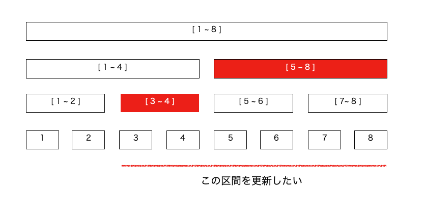
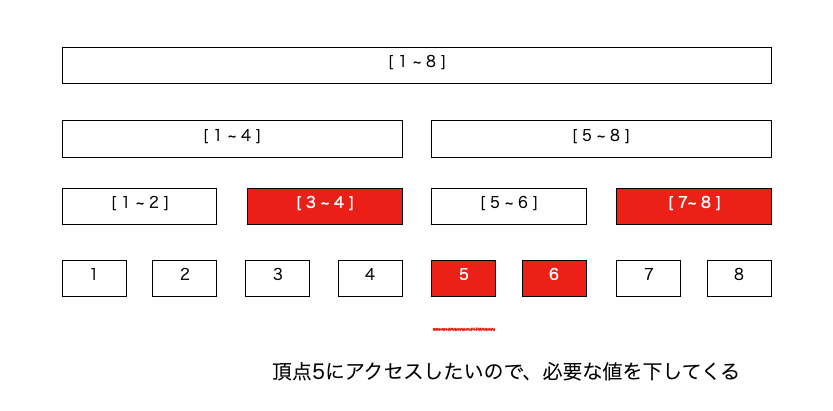

前のページ
前回は通常のセグ木を書きましたが、今回は遅延評価セグメントツリーを書きます。
通常のセグ木が、「一点更新」、「区間取得」に適応しているのに対して、遅延評価セグ木は「区間更新」、「区間取得」ができます。
要するにほぼ完全上位互換です。
区間取得は通常のセグ木と同じで、今回目新しいのは「区間更新」です。
普通に考えて区間を更新するにはその区間の長さ分の計算が必要そうな気がしますが、実は区間更新も O(logN) でできます。
というのも、遅延評価セグ木では区間更新クエリが来た時、『やっていないのにやったことにする。』ということをします。
また、区間の更新を保存する配列をLazy配列とし、区間の更新はとりあえずLazy配列に書き込むことにします。
どういうことかというと、一度下の図を見てください。Lazy配列は各頂点に対応しています。

この図ですと、閉区間[3 , 8] (1-indexed) に更新をかけたいのですが、わざわざ 3 , 4 , 5 , 6 , 7 , 8 の頂点に更新をかけると O(N)かかってしまいます。
そこで、わざわざ全部に更新をかけるのではなくて、[3 , 4]に対応する頂点と、[5 , 8]に対応する頂点のみに更新をかけて、
それよりも下は今後アクセスした時に、アクセスの通り道の頂点の持つ値を葉の方に伝播しながらアクセスすると良いです。
更新クエリが来たときにわざわざ正直に更新をしなくても、必要になったときにに溜まった更新をまとめて行えばいいわけです(取得したい頂点にアクセスする通り道で、上から下に流していく感じ)。
例えば下図は[3 , 8]に更新をかけた後、頂点 5 にアクセスをした様子です(アクセスとは、更新クエリや取得クエリのことです)。

頂点 5 のアクセス過程にある頂点は[5 , 8] の頂点と [5 ,6] の頂点なので、それらのLazy配列の持つ値を葉の方に伝播しながら頂点 5 にアクセスします。
以下に区間加算 , 区間和取得のセグ木のコード例を書きますが、その前に遅延評価で新たに実装する関数の説明を書きます。
eval(int k , int l , int r) := 頂点 k のLazy配列に保存された更新を、下の頂点に伝播します。l , r は頂点 k が担当する区間です。
どんな頂点でも、アクセス、もしくは通ったらとりあえず eval します。ただし、下に伝播させるだけでなく、今いる頂点の値を更新してから下に伝播させます。
それでは、以下はコード例です。verifyはこちら。
- #include<iostream>
- #include<vector>
- #include<string>
- using namespace std;
- template<class T>
- class LazySegmentTree{
- private:
- vector<T> Node , Lazy;//頂点の持つ値:Node , と 頂点のLazy配列
- int Size;//数列の要素数(最下層の長さ)(完全二分木なので、２の冪乗)
- int initializer = 0;//初期化値
- public:
-
- //区間取得のmerge演算
- T merge(T a , T b){
- return a+b;
- }
- LazySegmentTree(){}
- LazySegmentTree(int Size_){
- Size_+=10;//一応余分にとる
- Size = 1;
- while(Size < Size_){
- Size *= 2;
- }
- //高さKなので、頂点数は 2*2^K - 1
- vector<T>(Size*2 , initializer).swap(Node);
- vector<T>(Size*2 , initializer).swap(Lazy);
- }
- //遅延伝播。 頂点にアクセスするたびに呼び出して、溜めた更新を下に伝播させる lef , rigは半開区間なので注意
- void eval(int k , int lef , int rig){
- //Lazyが0 -> 更新が溜まっていないから伝播しなくていい
- if(Lazy[k] != initializer){
- Node[k] = merge(Node[k] , Lazy[k]);//自分のいる頂点の持つ値を更新。
- if(rig - lef > 1){
- //左右の子頂点の担当する区間は半分なので、持つ値も(区間の長さに比例しているので)半分に
- Lazy[k*2+1] = merge(Lazy[k*2+1] , Lazy[k]/2);
- Lazy[k*2+2] = merge(Lazy[k*2+2] , Lazy[k]/2);
-
- }
- Lazy[k] = initializer;//初期化
- }
- }
- /*
- 区間加算。半開区間 [ L , R )に xを加算する。
- 再帰で頂点を探索する。今いる頂点を k , k の担当する区間を[lef , rig)とする。
- 最初、デフォルトで k = 0 , lef = 0 , rig = -1ですが、rigが-1なのは引数のデフォルト値に変数を代入できないからで、
- rig = -1の場合、関数内でrig = Sizeに改めて代入する。
- つまり、デフォルトの場合は一番上の頂点に対応している。
- */
- void RangeAdd(int L , int R , T x , int k = 0 , int lef = 0 , int rig = -1 ){
- if(rig < 0)rig = Size;
-
- //アクセスしたらとりあえずeval！！
- eval(k,lef,rig);
- //区間外なので何もしない
- if(R <= lef || rig <= L)return;
-
-
- if(L <= lef && rig <= R){//頂点kの担当する区間が求めたい区間に完全に含まれているとき
- /*
- わざわざ(rig - lef)*xにしているのは、Lazy[k]をNode[k]に加算するときに、
- Lazyの中身が,頂点kの担当する区間に対応していた方がやりやすいから。
- 下に伝播させるときはLazy[k]/2とする(対応する区間が半分になるから)。
- */
- Lazy[k] = merge( (rig-lef)*x , Lazy[k] );
- eval(k,lef,rig);
- }else{//頂点kの担当する区間が求めたい区間に部分的に含まれているとき、kの左右の子頂点に降りて、もう一度探索する。
- //左右に降りて探索
- RangeAdd(L, R, x, 2*k+1, lef, (lef+rig)/2);
- RangeAdd(L, R, x, 2*k+2, (lef+rig)/2, rig);
- //探索結果を持ってきて今いる頂点を更新
- Node[k] = merge( Node[k*2 + 1] , Node[k*2 + 2]);
- }
- }
- /*
- 区間[L,R)のmergeを取得する。
- k,lef,rigはRangeAddの変数と同じ意味 ... 頂点kは [lef , rig)の区間を担当している。
- */
- T RangeSum(int L , int R , int k = 0, int lef = 0, int rig = -1){
- if(rig<0)rig = Size;
- //区間外なので何もしない
- if(R <= lef || rig <= L)return initializer;
- //アクセスしたらとりあえずeval！！
- eval(k,lef,rig);
- if(L <= lef && rig <= R){//頂点kの担当する区間が求めたい区間に完全に含まれているとき
-
- return Node[k];
- }else{//頂点kの担当する区間が求めたい区間に部分的に含まれているとき、kの左右の子頂点に降りて、もう一度探索する。
- return merge( RangeSum(L, R, 2*k+1, lef, (lef+rig)/2)
- , RangeSum(L, R, 2*k+2, (lef+rig)/2, rig) );
- }
-
-
- }
- void debug(){
- cerr << "DEBUG : " << endl;
- cerr << "INDEX : " ;
- for(int i = 0 ; i < Size ; i++){
- cerr << i << " " ;
- }
- cerr << endl;
- cerr << "VALUE : ";
- for(int i = 0 ; i < Size ; i++){
- cerr << RangeSum(i,i+1) << " ";
- }
- cerr << endl;
- }
- };
- int main(){
- int n ; int q;
- cin >> n >> q;
- LazySegmentTree<long long> S(n);
- while(q-->0){
- int type ;
- int lef , rig ;
- long long x;
- cin >> type ;
- if(type == 0){
- cin >> lef >> rig >> x;
- S.RangeAdd(lef,rig+1,x);
- }else{
- cin >> lef >> rig;
- cout << S.RangeSum(lef ,rig+1) << endl;
- }
- }
- return 0;
- }